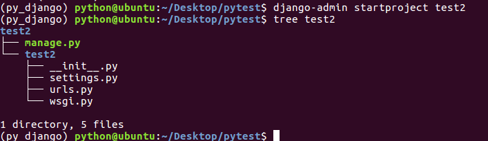
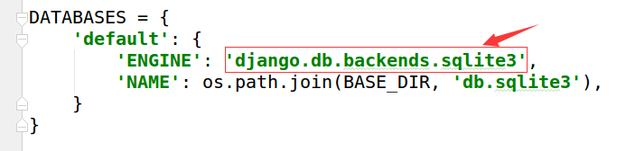
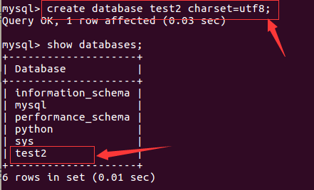
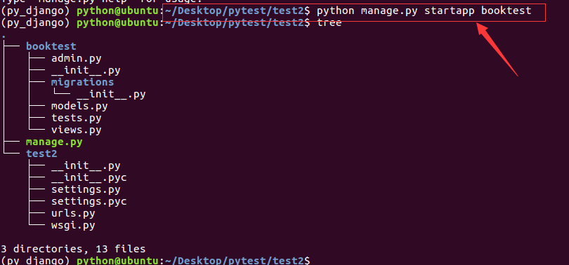
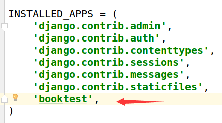

ORM简介
ORM，全拼Object-Relation Mapping，中文意为对象-关系映射，是随着面向对象的软件开发方法发展而产生的。面向对象的开发方法是当今企业级应用开发环境中的主流开发方法，关系数据库是企业级应用环境中永久存放数据的主流数据存储系统。对象和关系数据是业务实体的两种表现形式，业务实体在内存中表现为对象，在数据库中表现为关系数据。内存中的对象之间存在关联和继承关系，而在数据库中，关系数据无法直接表达多对多关联和继承关系。因此，对象-关系映射ORM系统一般以中间件的形式存在，主要实现程序对象到关系数据库数据的映射。面向对象是从软件工程基本原则(如耦合、聚合、封装)的基础上发展起来的，而关系数据库则是从数学理论发展而来的，两套理论存在显著的区别。为了解决这个不匹配的现象,对象关系映射技术应运而生。O/R中字母O起源于"对象"(Object),而R则来自于"关系"(Relational)。几乎所有的程序里面，都存在对象和关系数据库。在业务逻辑层和用户界面层中，我们是面向对象的。当对象信息发生变化的时候，我们需要把对象的信息保存在关系数据库中。目前流行的ORM产品如Java的Hibernate，.Net的EntityFormerWork等。
在MVC框架中的Model模块中都包括ORM，对于开发人员主要带来了如下好处：
- 实现了数据模型与数据库的解耦，通过简单的配置就可以轻松更换数据库，而不需要修改代码。
- 只需要面向对象编程，不需要面向数据库编写代码。
- 在MVC中Model中定义的类，通过ORM与关系型数据库中的表对应，对象的属性体现对象间的关系，这种关系也被映射到数据表中。
Django框架中ORM示意图如下：

创建项目test2
今天演示使用MySQL数据库，这是Web项目首选的数据库。
进入虚拟环境py_django。
workon py_django
在/home/python/pytest目录下创建项目test2。
django-admin startproject test2

打开test2/settings.py文件，找到DATABASES项，默认使用SQLite3数据库

修改为使用MySQL数据库，代码如下:
将引擎改为mysql，提供连接的主机HOST、端口PORT、数据库名NAME、用户名USER、密码PASSWORD。
DATABASES = {
'default': {
'ENGINE': 'django.db.backends.mysql',
'NAME': 'test2', #数据库名字，
'USER': 'root', #数据库登录用户名
'PASSWORD': 'mysql', #数据库登录密码
'HOST': 'localhost', #数据库所在主机
'PORT': '3306', #数据库端口
}
}
注意：数据库test2 Django框架不会自动生成，需要我们自己进入mysql数据库去创建。
下面是手动创建数据库，打开新终端，在命令行登录mysql，创建数据库test2。
注意：设置字符集为utf8
create database test2 charset=utf8;

返回第一个终端，进入test2目录，创建应用booktest。
cd test2
python manage.py startapp booktest

将应用booktest注册到项目中：打开test2/settings.py文件，找到INSTALLED_APPS项，加入如下代码：
'booktest',
